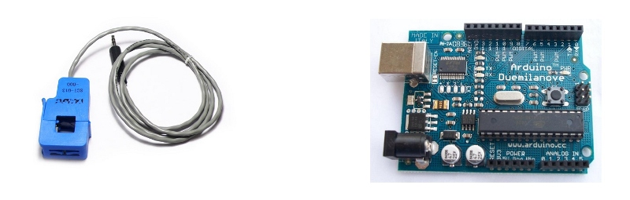

CT sensors - Interfacing with an Arduino

To connect a CT sensor to an Arduino, the output signal from the CT sensor needs to be conditioned so it meets the input requirements of the Arduino analog inputs, i.e. a positive voltage between 0V and the ADC reference voltage.
Note: This page give the example of an Arduino board working at 5 V and of the EmonTx working at 3.3 V. Make sure you use the right supply voltage and bias voltage in your calculations that correspond to your setup.
This can be achieved with the following circuit which consists of two main parts:
-
The CT sensor and burden resistor
-
The biasing voltage divider (R1 & R2)

Calculating a suitable burden resistor size
If the CT sensor is a "current output" type such as the YHDC SCT-013-000, the current signal needs to be converted to a voltage signal with a burden resistor. If it is a voltage output CT you can skip this step and leave out the burden resistor, as the burden resistor is built into the CT.
1) Choose the current range you want to measure
The YHDC SCT-013-000 CT has a current range of 0 to 100 A. For this example, let's choose 100 A as our maximum current.
2) Convert maximum RMS current to peak-current by multiplying by √2.
Primary peak-current = RMS current × √2 = 100 A × 1.414 = 141.4A
3) Divide the peak-current by the number of turns in the CT to give the peak-current in the secondary coil.
The YHDC SCT-013-000 CT has 2000 turns, so the secondary peak current will be:
Secondary peak-current = Primary peak-current / no. of turns = 141.4 A / 2000 = 0.0707A
4) To maximise measurement resolution, the voltage across the burden resistor at peak-current should be equal to one-half of the Arduino analog reference voltage. (AREF / 2)
If you're using an Arduino running at 5V: AREF / 2 will be 2.5 Volts. So the ideal burden resistance will be:
Ideal burden resistance = (AREF/2) / Secondary peak-current = 2.5 V / 0.0707 A = 35.4 Ω
35 Ω is not a common resistor value. The nearest values either side of 35 Ω are 39 and 33 Ω. Always choose the smaller value, or the maximum load current will create a voltage higher than AREF. We recommend a 33 Ω ±1% burden. In some cases, using 2 resistors in series will be closer to the ideal burden value. The further from ideal the value is, the lower the accuracy will be.
Here are the same calculations as above in a more compact form:
Burden Resistor (ohms) = (AREF * CT TURNS) / (2√2 * max primary current)
emonTx V2
If you're using a battery powered emonTx V2, AREF will start at 3.3 V and slowly decrease as the battery voltage drops to 2.7 V. The ideal burden resistance for the minimum voltage would therefore be:
Ideal burden resistance = (AREF/2) / Secondary peak-current = 1.35V / 0.0707A = 19.1 Ω
19 Ω is not a common value. We have a choice of 18 or 22 Ω. We recommend using an 18 Ω ±1% burden.
emonTx V3
The emonTx V3 uses a 3.3V regulator, so it's VCC and therefore AREF, will always be 3.3V regardless of battery voltage. The standard emonTx V3 uses 22 Ω burden resistors for CT 1, 2 and 3, and a 120 Ω resistor for CT4, the high sensitivity channel. See the emonTx V3 technical wiki at: https://wiki.openenergymonitor.org/index.php?title=EmonTx_V3#Burden_Resistor_Calculations
Tool for calculating burden resistor size, CT turns and max Irms - thanks to Tyler Adkisson for building and sharing this.
(Note: this tool does not take into account maximum CT power output. Saturation and distortion will occur if the maximum output is exceeded. Nor does it take into account component tolerances, so the burden resistor value should be decreased by a few (~5) percent allow some "headroom." There is more info about component tolerances at: ACAC Component tolerances.)
2) Adding a DC Bias
If you were to connect one of the CT wires to ground and measure the voltage of the second wire, relative to ground, the voltage would vary from positive to negative with respect to ground. However, the Arduino analog inputs require a positive voltage. By connecting the CT lead we connected to ground, to a source at half the supply voltage instead, the CT output voltage will now swing above and below 2.5 V thus remaining positive.
Resistors R1 & R2 in the circuit diagram above are a voltage divider that provides the 2.5 V source (1.65 V for the emonTx). Capacitor C1 has a low reactance - a few hundred ohms - and provides a path for the alternating current to bypass the resistor. A value of 10 μF is suitable.
Choosing a suitable value for resistors R1 & R2:
Higher resistance lowers quiescent energy consumption.
We use 10 kΩ resistors for mains powered monitors. The emonTx uses 470 kΩ resistors to keep the power consumption to a minimum, as it is intended to run on batteries for several months.
Arduino sketch
To use the above circuit to measure RMS current, with an assumed fixed RMS voltage (e.g. 240V) to indicate approximate apparent power, use this Arduino sketch: Arduino sketch - current only
Re: CT sensors - Interfacing with an Arduino
Hi everybody!
I need some help with CSLA2CD Honeywell hall efect. The question is that it´s need a minimun of 6V DC to work, recomended 8V and the output is VCC/2, incrementing 0,033V for every Amp. So I have connected it to 8V, and the output is 4V without load...
How can I connect to arduino?? Is it necesary to modify the library??
Thanks in advace!
Re: CT sensors - Interfacing with an Arduino
I'm experiencing some Problems with this circuit, meaning I'm not getting any values.
I got the SCT-013-000 and I'm using 320 Ohm Burden Resistor to measure a Current of 10A.
I already checked my circuit (build it 2 times, checked voltages) and now also the SCT. There I noticed, it has got an internal resistance of 100 Ohm. Could that be a problem?
What more can I do?
Sebi
Re: CT sensors - Interfacing with an Arduino
I use two of the sct-013-000 on my system. 120 volts with a 3.3volts Arduino. I use a 47 ohms resistor on each. This gives me a 50 amps maximum range on the ct instead of the 100 amps max, but I use them for measuring internal energy on individual breakers (220 volts) and the max one is the clothes dryer at 40 amps. To measure up to 100 amps, you would need 25 ohms resistor or so. I used my alternate method (explained in another comment) to chose the burden resistor since nobody seems to really know the number of turns on this device
Re: CT sensors - Interfacing with an Arduino
wrt this sensors
which one is more convenient to use, not for the whole house monitoring (ive got a efergy there) but for the different sections of the house.
That would be a max of 2000W to 3000W in each.
If i read correctly both will measure up to 5amps (230V*5A=1150W??) so thats maximum per sensor?
also, the 100 version would be better cause it outputs 0-5mA so more precise ??
Please any help.
Thanks
TA12L-200
www.ebay.com/itm/0-5A-Input-2-5mA-Output-AC-Current-Transformer-TA12-200-/300609568022
TA12L-100
www.ebay.com/itm/TA12L-100-Epoxy-Resin-Embedding-Current-Transformer-Red-/350497986004
Re: CT sensors - Interfacing with an Arduino
I think you have the example burden values reversed for the 3.3V and 5.0V implementations of the SCT-013-000. If you use the recommended 56 ohms in a 3.3V system, (33 mA * 1.414) * 56 ohms = 2.61V. Add the 1.65V offset value, and your peak voltage is 2.61 + 1.65 = 4.26V in a 3.3V system. Or are you using a different ADC reference value?
Re: CT sensors - Interfacing with an Arduino
Hi, thanks for noticing this. It turns out that the number of turns on the SCT-0130-00 are different to what we initally though. The number of turns is acutally very similar (if not the same) as the efergy CT. The datasheet is not clear on this. I've removed the recomended burden resistor values while we do some more testing. We have been using 15ohm burden rersistors in the emonTx running at 3.3V.
Re: CT sensors - Interfacing with an Arduino
Any luck with testing the SCT-013-000? I'm still having accuracy problems with the two I have?
Re: CT sensors - Interfacing with an Arduino
I experienced accurancy problem me too. Any news and testing for SCT-013-000?
Re: CT sensors - Interfacing with an Arduino
They are quite precise. I use a 47 ohms burden resistor at 3.3volts. This means roughly 50 amps max over a 512 range on the Arduinos analog input pin, so about 10 ticks per amp, or 100 ma per tick. This is theorical. As the sct013-000 outputs 33mA max at 100 amps, spread over 512 steps on the analog pin, don't expect miracles. I do get a final tested resolution of about 50 watts over the entire range, which is not so bad. If I need more precision, I use the sct-013-030 without a burden resistor. On a 3.3 volts system, it's one volt output is precive enough.